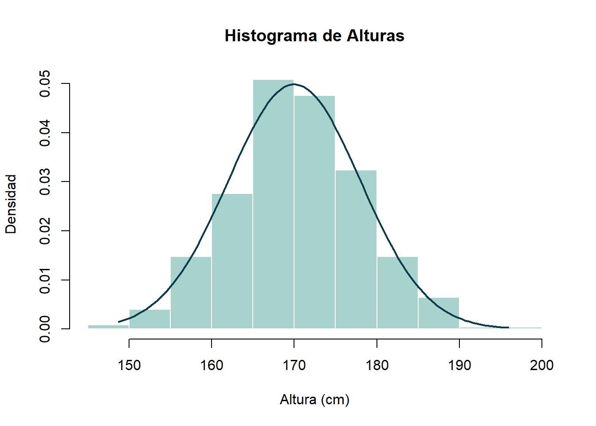
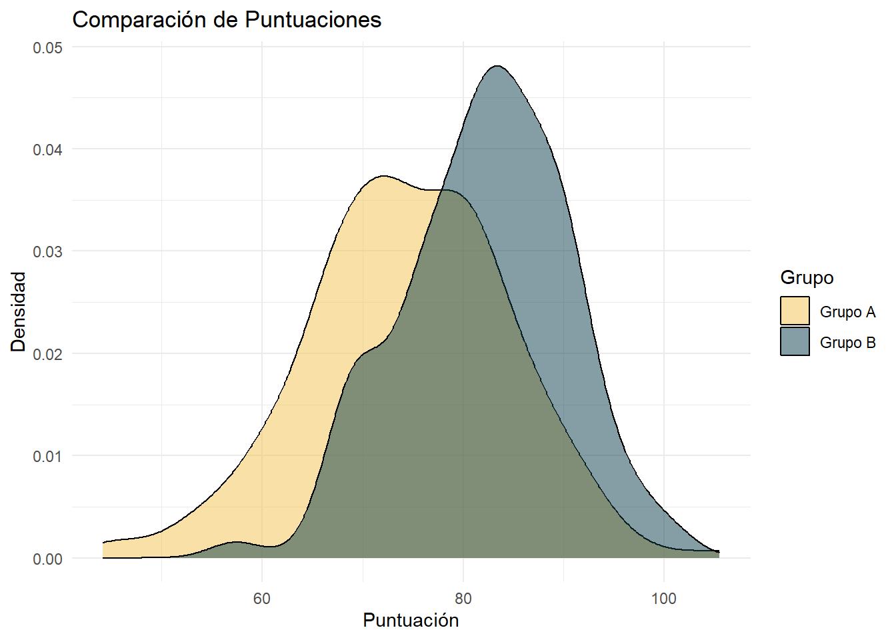

[1] 165.5162 168.1586 182.4697 170.5641 171.0343 183.7205Distribución Normal
Estadistica Aplicada | 5to semestre de Economía industrual
Análisis de Altura de Estudiantes
Las alturas de estudiantes universitarios siguen una distribución normal con media \(\mu = 170 cm\) y desviación estándar \(\sigma = 8 cm\).
- Simula una muestra de 500 estudiantes
- Calcula la media, mediana y desviación estándar muestral
- ¿Qué porcentaje de estudiantes mide más de 180 cm?
- ¿Cuál es la altura del estudiante en el percentil 25?
- Crea un histograma de la muestra con la densidad teórica superpuesta
Resolución
- Se generan los datos aleatorios.
- Se obtienen los estadísticos descriptivos básicos de la simulación.
Media: 170.2767
Mediana: 170.1657
Desviación Estándar: 7.782155- Se calcula el porcentaje de forma teórica y con la muestra.
Porcentaje teórico mayor a 180 cm: 10.56498 %Porcentaje empírico mayor a 180 cm: 11 %- Se utiliza la función de cuantiles.
Percentil 25 teórico: 164.6041 Percentil 25 muestral: 165.4029- Se grafica el histograma de frecuencias relativas con la curva normal encima.

Análisis e interpretación de resultados:
Estadísticos descriptivos: La media (170.28 cm) y la mediana (170.17 cm) de la simulación quedan muy cerca de los 170 cm teóricos y casi coinciden entre sí. Es lo esperable en una normal: al ser simétrica, el centro puede medirse indistintamente con cualquiera de las dos.
Más de 180 cm: En teoría, el 10.56% de los estudiantes supera los 180 cm, y en la muestra el valor fue 11%. Es una proporción pequeña porque 180 se ubica a más de una desviación estándar por encima de la media; en términos prácticos, aproximadamente 1 de cada 10 estudiantes.
Percentil 25: La cuarta parte de los estudiantes mide menos de 164.6 cm. Ese valor funciona como umbral para identificar al grupo de menor estatura.
Temperatura Industrial
Un proceso industrial debe mantener la temperatura a 350°C ± 10°C. Las temperaturas siguen \(N(350, 5^2)\).
- Simular un día de producción (1000 mediciones)
- ¿Qué porcentaje del tiempo la temperatura está fuera de especificación?
- Si el proceso se descentra a \(\mu = 355°C\), ¿cómo cambia la calidad?
- ¿Qué \(\sigma\) se necesita para tener 99.9% de productos dentro de especificación?
Resolución
- Se generan los datos con media 350 y desviación estándar 5.
- Los límites de especificación son \(350 \pm 10\), es decir, de 340 a 360.
Porcentaje teórico fuera de especificación: 4.550026 %Porcentaje empírico fuera de especificación: 4.7 %- Se calcula la nueva probabilidad de quedar fuera de los mismos límites [340, 360].
Nuevo porcentaje fuera de especificación: 16.00052 %- Se busca la desviación estándar con la que el intervalo \([340, 360]\) cubre el 99.9% central. Como los límites son simétricos respecto a \(\mu = 350\), la tolerancia es tol = 10.
Desviación estándar necesaria: 3.039027Análisis e interpretación de resultados:
Defectos actuales: Con el proceso en su estado actual, el 4.55% del tiempo la temperatura queda fuera del rango \([340, 360]^\circ\text{C}\) (en la simulación fue 4.7%). Los límites están a dos desviaciones estándar de la media, así que el proceso cumple casi siempre, aunque aún hay cerca de 1 medición de cada 22 fuera de especificación.
Si el proceso se descentra: Con la media en \(355^\circ\text{C}\), el porcentaje fuera de especificación sube a 16%, más del triple. Basta un desplazamiento de 5 grados para que el límite de 360 quede a solo una desviación estándar, de modo que mantener el proceso centrado importa tanto como mantenerlo estable.
Variabilidad necesaria: Para que el 99.9% de los productos esté dentro de especificación con la misma tolerancia, la desviación estándar debería bajar de 5 a 3.04. En la práctica significa mejorar el control del proceso o contar con equipo más preciso.
Análisis de Ventas Mensuales
Las ventas mensuales de una tienda siguen \(N(50000, 12000^2)\) pesos.
Tareas:
- Simula las ventas de 24 meses
- ¿Cuál es la probabilidad de tener ventas superiores a 60,000 pesos?
- ¿En cuántos meses se espera tener ventas por debajo de 30,000 pesos?
- Calcula el rango intercuartílico de las ventas
- Si la meta es superar 45,000 pesos, ¿qué porcentaje de meses se cumple?
Resolución
- Se generan las ventas de dos años (24 meses).
[1] 66451.50 43223.62 54357.54 57594.35 54851.22 48726.51 68138.26 48864.09
[9] 74221.08 49247.43 65658.44 77439.74 33333.67 46654.53 48400.14 57631.40
[17] 46588.96 18122.53 20714.40 65841.36 46320.34 28624.30 47936.99 64576.10- Se usa la función de distribución acumulada.
Probabilidad de ventas > $60,000: 0.2023284 ( 20.23284 %)- Se calcula la probabilidad para un mes y se multiplica por los 24 meses.
Número esperado de meses con ventas < $30,000: 1.146968 - El rango intercuartílico (IQR) se obtiene de forma teórica con los cuantiles de la normal y de forma muestral con la función
IQR().
IQR teórico: 16187.75 IQR muestral (de los 24 meses): 18324.87 - Se calcula la probabilidad de superar 45,000 y se expresa en porcentaje.
Porcentaje de meses que se espera cumplir la meta: 66.15389 %Análisis e interpretación de resultados:
Meses muy buenos: Existe una probabilidad de 20.23% de que en un mes cualquiera las ventas superen los \(\$60,000\); es decir, aproximadamente 1 de cada 5 meses.
Meses malos: En dos años se espera que apenas 1.15 meses tengan ventas inferiores a \(\$30,000\), o sea, un mes flojo cada dos años aproximadamente. Es poco frecuente, pero conviene tener un colchón para ese mes.
Variabilidad: El IQR teórico es de 16,188 pesos: la mitad de los meses “normales” se ubica en una franja de unos \(\$16,000\) alrededor del promedio. Sirve para planear gastos fijos con un rango realista.
Meta de \(\$45,000\): Se espera lograrla en el 66.15% de los meses, alrededor de 2 de cada 3. Como la meta queda por debajo del promedio, se alcanza la mayor parte de las veces.
Tiempo de Vida de Baterías
La duración de baterías sigue \(N(1200, 150^2)\) horas.
- Simula la vida útil de 800 baterías
- ¿Qué garantía (en horas) cubre al 95% de las baterías?
- Si se venden 10,000 baterías con garantía de 900 horas, ¿cuántas se espera que fallen?
- Compara la media y mediana de tu simulación con los valores teóricos
- ¿Cuál es el percentil 10 de la distribución?
Resolución
- Se genera la muestra aleatoria.
[1] 1405.644 1115.295 1254.469 1294.929 1260.640 1184.081- Cubrir al 95% implica que solo el 5% falla antes de ese tiempo, es decir, el percentil 5.
La garantía que cubre al 95% es de: 953.272 horas- Se calcula la probabilidad de fallar antes de 900 horas y se multiplica por las 10,000 baterías.
Número esperado de baterías fallidas: 228 - En una normal, la media y la mediana teóricas coinciden con \(\mu\).
Media teórica: 1200 vs Media muestral: 1192.43 Mediana teórica: 1200 vs Mediana muestral: 1193.8 - Con
qnorm()se encuentra el valor que deja por debajo al 10%.
El percentil 10 de la distribución es: 1007.767 horasAnálisis e interpretación de resultados:
Garantía: Para que solo el 5% de las baterías falle durante la garantía, esta debería fijarse en 953.27 horas.
Fallas esperadas: Si se venden 10,000 baterías con garantía de 900 horas, se espera que unas 228 fallen antes de tiempo y deban reponerse. Es apenas el 2.28%, ya que 900 horas queda a dos desviaciones estándar por debajo de la media.
Simulación vs. teoría: La media (1192.43) y la mediana (1193.8) de la muestra están muy cerca de las 1,200 horas teóricas, por lo que la simulación representa bien a la distribución.
Percentil 10: El 10% de las baterías que menos duran se agota antes de 1007.77 horas. Es una referencia útil para control de calidad: si un lote tiene muchas baterías por debajo de ese valor, algo anda mal.
Análisis de Errores de Medición
Los errores de un instrumento de medición siguen \(N(0, 2.5^2)\) unidades.
- Simula 1000 mediciones
- ¿Qué porcentaje de errores está entre -5 y +5 unidades?
- Calcula la probabilidad de que un error sea mayor a 6 unidades en valor absoluto
- Si se considera “preciso” un error ≤ 3 unidades, ¿qué porcentaje de mediciones son precisas?
- Verifica que la distribución es simétrica alrededor de 0
Resolución
- Se generan los errores con media 0.
- La probabilidad se obtiene como la diferencia de dos valores de la distribución acumulada.
Porcentaje teórico entre -5 y +5: 95.44997 %Porcentaje empírico entre -5 y +5: 95.3 %- El valor absoluto implica sumar las dos colas: \(X < -6\) o \(X > 6\).
Probabilidad teórica de |Error| > 6: 1.639507 %- Se evalúa el intervalo central [-3, 3].
Porcentaje de mediciones precisas (<= 3 unidades): 76.98607 %- Se obtienen la media y la mediana de la muestra para revisar la simetría.
Media muestral: 0.04031966 Mediana muestral: 0.0230241 Ambas deberían quedar muy cerca de 0.
Análisis e interpretación de resultados:
Errores entre -5 y +5: El 95.45% de los errores cae dentro de ese rango (en la muestra, 95.3%). Como ±5 equivale a dos desviaciones estándar, coincide con la regla del 95% de la normal.
Errores grandes: La probabilidad de que un error supere las 6 unidades en valor absoluto es de solo 1.64%, por lo que los errores grandes son raros.
Mediciones precisas: Si se define “preciso” como un error de 3 unidades o menos, el 76.99% de las mediciones lo cumple, cerca de 3 de cada 4. Si se necesitara mayor precisión, este instrumento se quedaría corto.
Simetría: La media (0.04) y la mediana (0.023) quedan prácticamente en 0, lo que indica que el instrumento no tiene sesgo: se equivoca igual hacia arriba que hacia abajo.
Puntuaciones de Examen Comparativo
Dos grupos toman el mismo examen. Grupo A: \(N(75, 10^2)\), Grupo B: \(N(82, 8^2)\).
- Simula 200 estudiantes de cada grupo
- ¿Qué porcentaje de estudiantes del Grupo A supera la media del Grupo B?
- ¿Cuál es la probabilidad de que un estudiante del Grupo B tenga puntuación menor a 70?
- Compara las distribuciones visualmente
- ¿A partir de qué puntuación está el 10% superior de cada grupo?
Resolución
- Se generan las dos muestras de manera independiente.
- La media del Grupo B es 82. Se calcula qué porcentaje del Grupo A supera ese puntaje.
Porcentaje del Grupo A que supera la media de B: 24.19637 %- Se usa
pnorm()con los parámetros del Grupo B.
Probabilidad de que un estudiante de B tenga menos de 70: 6.68072 %70 queda 1.5 desviaciones estándar por debajo de la media de B, por eso la probabilidad resulta cercana a 6.68%.
- Se grafican las densidades de ambos grupos juntas para compararlas.

- Se obtiene el percentil 90 de cada grupo.
Puntuación mínima para el top 10% en Grupo A: 87.81552 Puntuación mínima para el top 10% en Grupo B: 92.25241 Análisis e interpretación de resultados:
Comparación entre grupos: Solo el 24.2% del Grupo A supera el promedio del Grupo B (82 puntos), aproximadamente 1 de cada 4. La gráfica lo confirma: la curva de B está más a la derecha y es más angosta, es decir, B obtiene mejores calificaciones y más homogéneas.
Calificaciones bajas en B: La probabilidad de que un estudiante del Grupo B saque menos de 70 es de 6.68%, muy baja. En ese grupo casi nadie reprueba por debajo de ese nivel.
El 10% más alto: Para entrar al 10% superior del Grupo A se necesitan al menos 87.82 puntos, y en el Grupo B 92.25. En B el umbral es más alto porque su promedio también lo es.